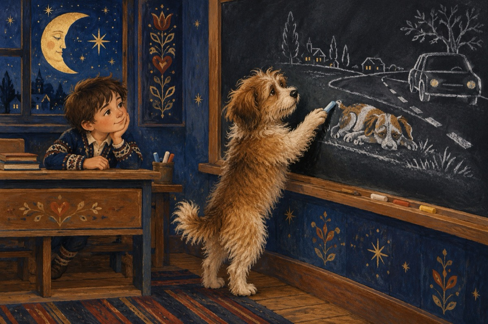

Cățelușul păr de urs
Cățelușul îngrijorat îl întreabă.
-Gigele, când mergi la șcaoală?
Vreau și eu să merg cu tine,
Să învăț lătratul mai bine.
-Nu te-nțeleg Păr de Urs,
Ai ceva ce ții ascuns?
Am văzut că latri bine,
Spune-mi ce-i cu tine?
-Vreau să stau cu tine-n bancă,
Am auzit că aveți tablă.
Vreau să merg să desenez,
Viața unui câine maidanez.
-Păr de Urs eu mă-nvoiesc,
Însă să nu latri-n clasă.
În rest bine mă gândesc,
Dacă știi să desenezi, desenează!...
Acum Urs este la tablă
Cu crete colorate desenează
Un câine maidanez lovit de o mașină,
Ce nimeni nu sare în ajutor să-i vină!...
Vasile Groza